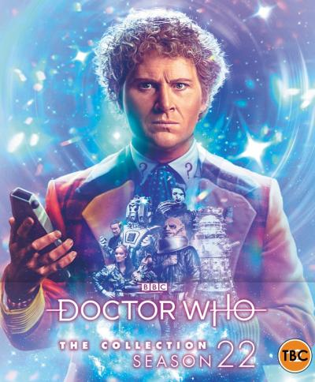
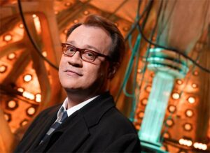
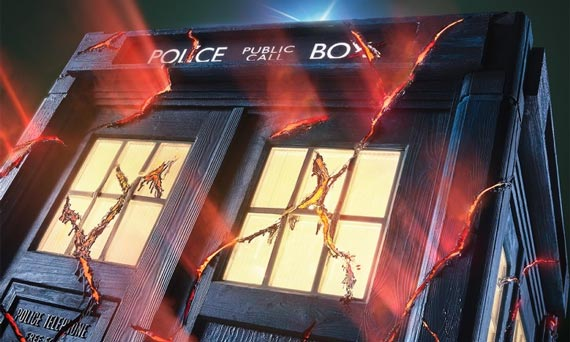

News
Season 22 Boxset Announced
The BBC has announced that Season 22 of Doctor Who will be available on Blu-ray as the next box-set release.
Season 22 was the first full series starring the Sixth Doctor Colin Baker and companion Peri played by Nicola Bryant
The season saw them face off against a host of classic monsters and villains, including Daleks, Cybermen, Sontarans, Davros (Terry Molloy) and The Master (Anthony Ainley) – as well as introducing a new female nemesis The Rani (Kate O’Mara) and the villainous slug-like Sil (Nabil Shaban).
Trailer
Russell T Davies returning as showrunner for 60th, and series beyond
Russell T Davies will make an explosive return to screens to celebrate the 60th Anniversary of Doctor Who in 2023, and series beyond. BBC Studios is partnering with Bad Wolf to produce.
Responsible for Doctor Who’s revival in 2005, Davies is credited with propelling the show into a global phenomenon and making it one of TV’s biggest hits.
His tenure on the show oversaw a surge in popularity, enjoying huge acclaim and success. The Doctor won the nation’s hearts through his masterful relaunch, which led him to create two spin-off series, Torchwood and The Sarah Jane Adventures, during that time.
Davies left the show in 2009. A lifelong Doctor Who fan, he has most recently achieved huge success with Years And Years, A Very English Scandal and It’s A Sin, which won Best New Drama at the National TV Awards this month.
Russell T Davies says: “I’m beyond excited to be back on my favourite show. But we’re time-travelling too fast, there’s a whole series of Jodie Whittaker’s brilliant Doctor for me to enjoy, with my friend and hero Chris Chibnall at the helm – I’m still a viewer for now.”
New Year's day 2022 special synopsis and guest stars reveled
The Thirteenth Doctor (Jodie Whittaker) and friends will kick-start 2022 with an action-packed spectacular episode set to air on BBC One on New Year’s Day.
The festive special will feature guest stars Aisling Bea (This Way Up, Living With Yourself, Quiz), Adjani Salmon (Dreaming Whilst Black, Enterprice) and Pauline McLynn (Father Ted, Shameless).
Sarah (Aisling Bea) owns and runs ELF storage, and Nick (Adjani Salmon) is a customer who visits his unit every year on New Year’s Eve. This year, however, their night turns out to be a little different than planned.
The festive episode is the first of three Doctor Who Specials airing in 2022. The second Special airs in Spring and Jodie’s final feature-length Special (in where the Thirteenth Doctor will regenerate), will transmit in autumn 2022 as part of the BBC’s Centenary celebrations.